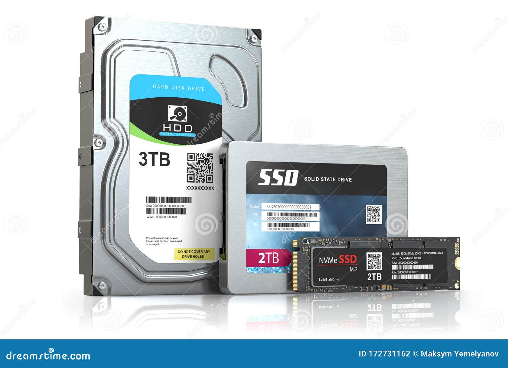
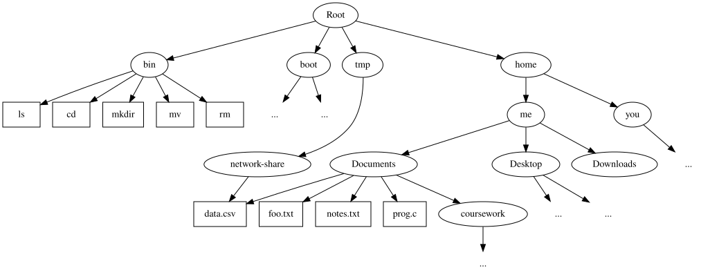

State the difference between a file and a filesystem.
Recognise the actions a filesystem must be able to perform, and the proporties it should have.
Work with files in a Unix-based operating system: know how to perform the filesystem operations on the command line.
Explain how the directory structure and Inodes are used in the Traditional unix Filesystem,
and explain some of the implications, e.g., to uniqueness of files, and what happens when a file is deleted.
State the principles of the Unix philosophy and give examples of how Unix-based operating systems embrace them.
33 Recap: operating systems
So far, we have looked at
The CPU: process scheduling.
Which process should be run next.
Also provides protection – processes should not interfere with one another.
Facilitates inter-process communication, allowing processes to coordinate and share data safely.
Prevents or breaks deadlocks.
So far, we have looked at
Manages memory, by ensuring each process is allocated a contiguous block and isolating one process’s memory from that of another.
Virtual memory:
Main memory is volatile, meaning data is lost when the computer is switched off.
We need a means of persistently storing data.
Persistent storage should be much larger than main memory,
it should therefore be cheap, but this makes it slow.

A means of organising data,
different from disks, which are a place to store data.
Some applications benefited from direct access to disk,
e.g., database software can work optimally if it has direct access to the hardware.
Filesystems can also be used to organise main memory, and can be used to organise data other than files.
A collection of bytes stored on disk.
Humans like memorable names,
so we like to give each collection of bytes a name.
We also like to organise our names,
this is done using directories.
Much easier to find things when they are well-organised.
Author (of Alice Through The Looking Glass, The Jabberwocky and others), also a mathematician.

##POSIX paths
Root directory: unique node at the top of the tree,
Represented as /.
The same filename can appear in multiple directories.
A directory name may appear in exactly one directory.
POSIX paths separate directories by /,
other Filesystems may use different separators, e.g., \.
Why is a directed acyclic graph a good representation for file hierarchy.
Hint:
A tree structure is similar, but does not allow two links to the same node.
Why can Filesystems not be represented as a tree?
Every filesystem must be able to:
Remember, as with operating systems
Early Filesystems used records,
fixed size objects with some structure.
Hangover from the days of index cards / punched cards.
Modern files have no structure and arbitrary size.
Files are simply arrays of bytes stored on disk,
i.e., can be defined by data locations on disk.
A file is just an array of bytes,
so we need to know where to find the bytes on disk.
But the OS also needs some other information.
Stored in a datastructure called an Inode.
Inodes store:
Inode are a fixed size and can be stored as a simple array on disk.
Each Inode can be uniquely identified by its position in the array (Inode number).
Inodes do not include filenames.
Instead, filenames are stored in directories:
each entry is a pair: name, Inode_number.
Every directory contains two special entries:
.. refers to the parent directory,. refers to the directory itself./home/me/Documents/foo.txt
Root: /, 0
Inode 0 is a directory:
bin, 1
boot, 2
dev, 3
etc, 4
home, 5
lib, 6
tmp, 7
usr, 8
var, 9Locate the home Inode:
index 5.
It is another directory:
Desktop 10
Documents 11
Downloads 12
Dev 13Locate the Documents Inode:
index 11.
It is another directory:
Coursework 14
data.csv 15
foo.txt 16
notes.txt 17
prog.c 18Locate the foo.txt Inode:
index 16.
It is a file:
size: 4KB,
timestamps: created at Jun 22 06:58,
type: file,
ownership: 2001 (me),
permissions: -rw-rw-r--,
reference count: 1,
content: 1024, 1025, 1026, 1027, ...Given the inode, any file operation can be performed.
Note: we can also traverse upwards using ...
The . and .. are hidden when listing files on the command-line and by default in most file managers.
Actually, any file that begins with a ‘.’ is hidden.
People use this to their advantage, and often name configuration files / directories so that they will be hidden
The notion that filenames preceded by a . should be hidden is the result of a software bug in the early days of Unix. When the special . and .. directory entries were added to the filesystem, it was decided that the ls command should not display them. However, the program was mistakenly written to exclude any file whose name started with a .
Or was it just lazy programming?
MYFILE.TXTMAX_PATH_LENGTH in the Windows API is \(260\) characters.In early DOS, devices were exposed as special filenames
For backwards compatibility, Windows won’t let you name a file
CON, PRN (default printer), AUX, NUL (discard everything written)
COM0 through COM9 (serial ports)
LPT0 through LPT9 (parallel ports(
Trying to name, e.g., NUL.txt also fails, but you can bypass WIN32 path parsing with, e.g., WSL.
A file can be removed from a directory.
If reference count reaches \(0\):
Note that deleting a file may not remove its content from the disk.
Analogous to a page of memory,
i.e., a bunch of bytes on disk.
It is sensible to group all data in the same file together on a hard-disk-drive.
This minimises movement of the read/write head.
Exercise: is this still necessary (or beneficial) on solid state drives?
Remember: main memory is very slow compared to CPU.
Disks are orders of magnitude slower than main memory.
Thus OS’s cache Inodes, and even data in main memory to increase speed.
Sometimes data is not written to disk immediately,
this is why it is best not to pull out a USB drive unless OS says “safe to remove”.
Principles on which the UNIX OS was built:
Four principles:
In their Unix paper of 1974, Ritchie and Thompson quote the following design considerations:[3]
Unix philosophy as summarised by Peter H sallus:
Earlier, we explored pipes’
A way of using the output of one process as the input of another.
Pipes allow us to combine several programs which do one thing very well.
Text streams are used as the output and input of most unix programs, meaning they can work well together.
We will see shortly that everything in Unix is a file, another common interface.
File redirection.
Special files (which aren’t really files),
stdin, stdout and stderr,/dev/null, /dev/zero, /dev/random.